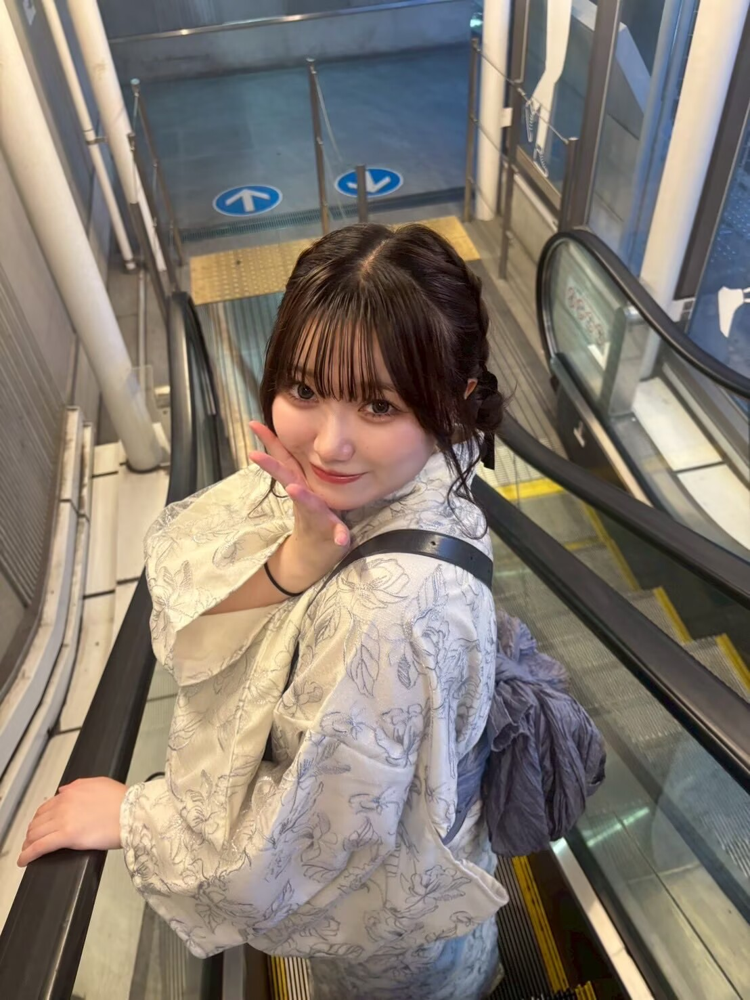
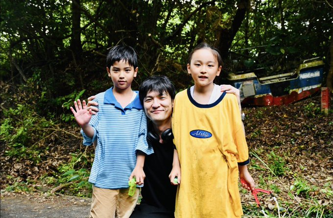
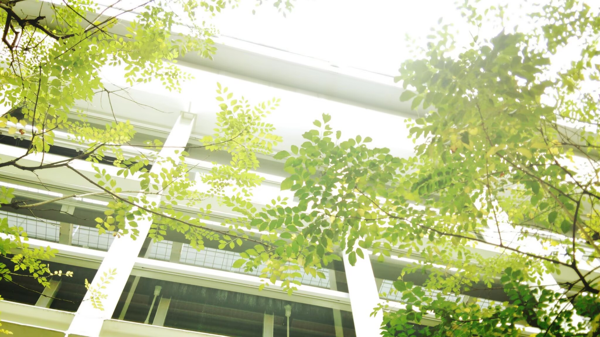
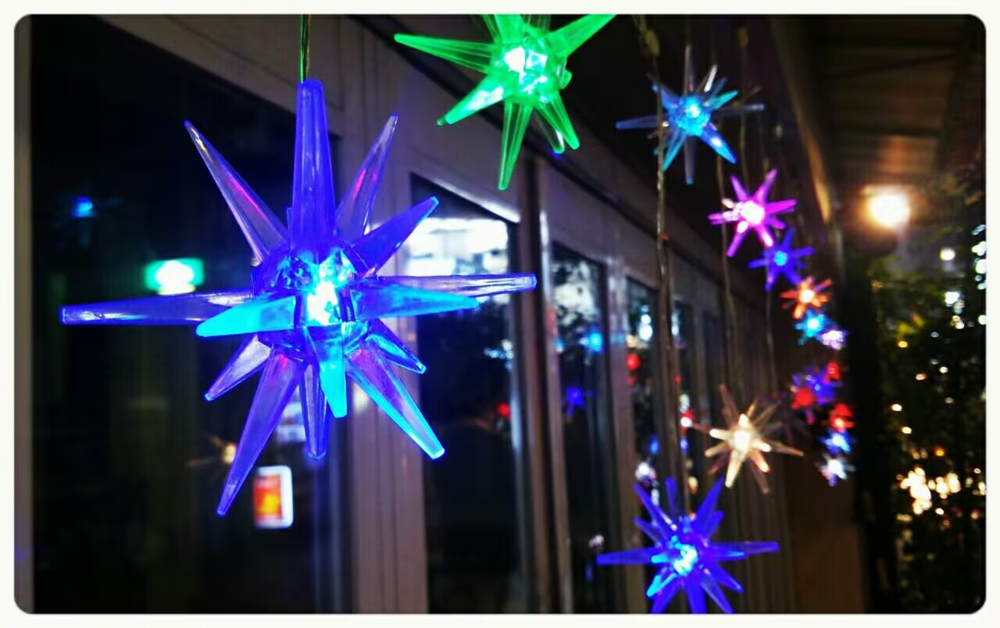
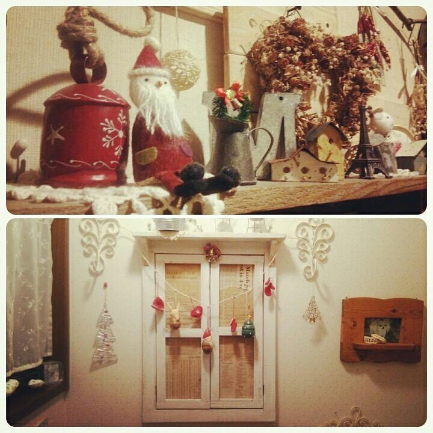
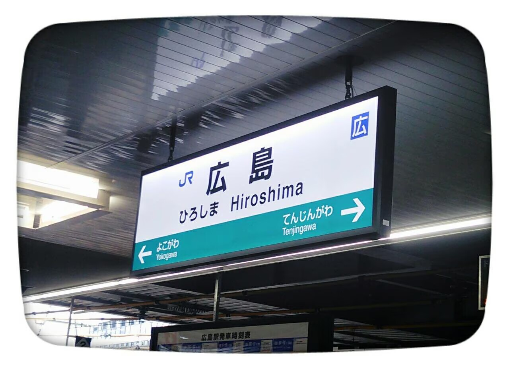
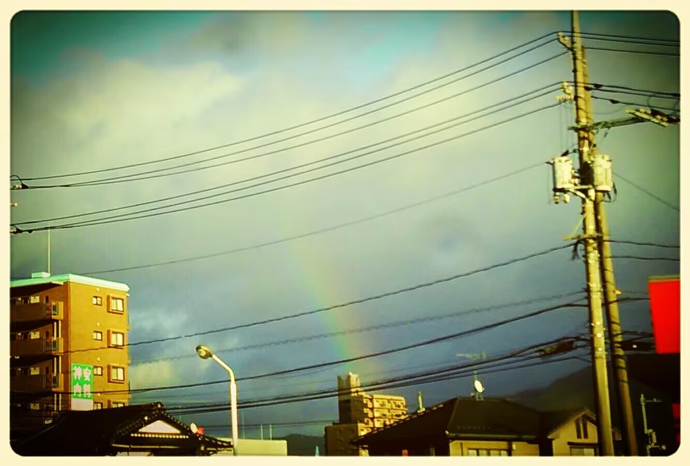
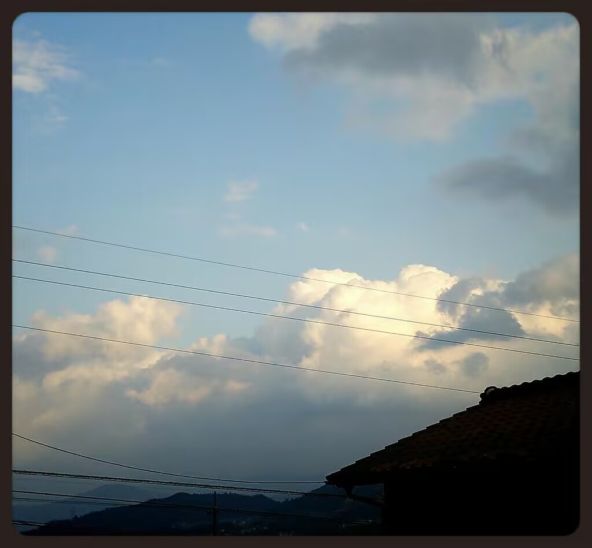
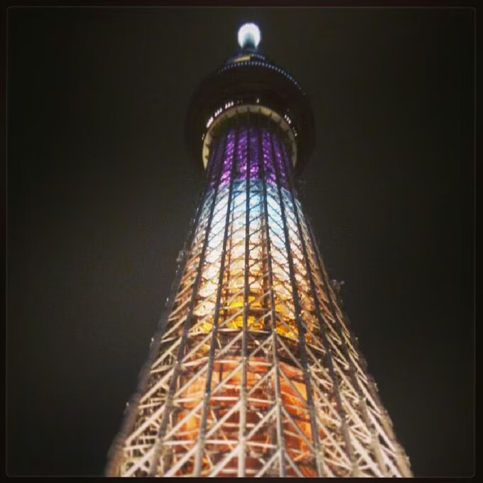

Now playing
J-Pop on repeat.
I'm especially into J-Pop. My all-time favorite singer is Yuika ↗.
Thanks for finding me.
My interests are all over the place, from Japanese music to flight simulation and video games. Hope you're doing great.
A few things I love
Now playing
I'm especially into J-Pop. My all-time favorite singer is Yuika ↗.
Flight simulation
I'm a C1-rated controller in VATUSA, and I also fly on VATSIM and IVAO with Microsoft Flight Simulator and X-Plane. Airliners and business jets are my favorites.
Gaming
I enjoy FPS games, especially Overwatch. I like learning the game and having a good time with friends.



Another favorite artist
His music is another favorite of mine. I put together a playlist of the songs I return to most.
Listen to my selectionA small nostalgia
I'm drawn to the atmosphere around 2013–2015: the colors, the music, and the slightly imperfect digital texture of that time.







Reiwa, in pictures
A small collection of moments from the Reiwa years.
Current time